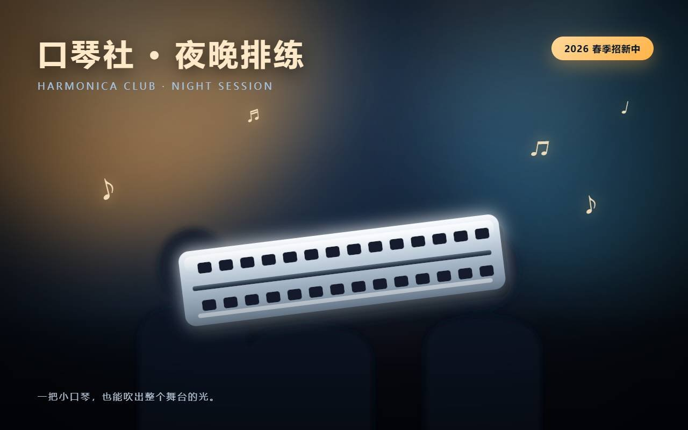

一把小口琴，也能吹出整个舞台的光
ABOUT US · 关于我们
口琴社成立于一九九八年秋天，是学校里历史最悠久的音乐类社团之一。二十七年来，我们只做一件事：让每一个拿起口琴的人，都能在最短的时间里吹出属于自己的旋律。口琴是世界上最便携的乐器，它只有手掌大小，却能装下一整个乐队的和声、一整个夜晚的情绪，以及一所大学里最自由的那部分青春。
很多人第一次听说口琴社，都会问同一个问题：口琴这么简单，能玩出什么花样？答案是——比你想象的多得多。口琴家族里有十孔布鲁斯口琴、复音口琴、半音阶口琴，还有能同时吹出和弦的重音口琴与低音口琴。十孔口琴可以吹出地道的蓝调与摇滚，半音阶口琴能完整演奏古典与爵士，而当我们把五六支口琴放进一个乐队，它就变成了一个具体而微的管弦乐团。社团目前设有演奏组、教学组、编曲组与新媒体组四个方向，无论你想站在聚光灯下独奏，还是想坐在排练室的角落里改编一首曲子，都能在这里找到自己的位置。
社团的日常由三部分组成：每周一次的集体排练、每周两次的分组教学，以及每月一场的“琴房夜话”分享会。集体排练在艺术楼三楼的排练厅进行，我们从最基础的气息控制讲起，讲到压音、超吹、舌堵伴奏，再到如何把一个完整的乐句吹得有呼吸感。分组教学则按基础分成入门班、进阶班和舞台班，入门班从零开始，第一节课就能吹出《小星星》；进阶班开始接触蓝调音阶和即兴；舞台班则直接为校内外的演出做准备。至于“琴房夜话”，那是社团最柔软的部分——有人带着自己写的曲子来，有人只是来听，有人抱着琴坐在窗边吹到熄灯。
二十多年里，口琴社拿过省大学生艺术展演器乐组的一等奖，也在校园十佳社团的评选中连续多年上榜。但比起奖状，我们更在意另一些东西：是迎新晚会上，台下几百个人跟着我们的旋律一起打拍子的那个瞬间；是毕业季的草坪音乐会上，已经工作的老社员背着琴从城市另一头赶回来，和我们合奏一首《送别》；是深冬的排练厅里，暖气不太足，大家挤在一起对着谱子一遍遍磨一个和声，磨到手指发僵也不肯走。音乐从来不是一个人的事，口琴社也不是一个只收“会吹琴的人”的地方——我们收的是愿意为一个音符多试十遍的人。
如果你从来没有碰过口琴，没关系。社团会为每一位新成员准备一支入门复音口琴，前四周的教学完全免费，你只需要带着耳朵和好奇心过来。如果你已经会吹一点，那我们更欢迎你来，因为一个社团真正的厚度，从来不是靠某几个高手撑起来的，而是靠一群水平不同、却愿意互相听、互相配合的人撑起来的。我们相信，一支口琴最动人的时刻，不是它独奏的时候，而是它和另一支口琴、和吉他、和鼓、和整个房间的呼吸对上的那一刻。
这个春天，口琴社在等新的声音。你可以是那个第一次把嘴唇贴上琴格、紧张得不敢用力的人，也可以是那个在宿舍阳台上吹了三年、终于想找同伴的人。不论你带着什么来，我们都想听你吹一段。招新不设门槛，不考试，不面试，只要你愿意来，排练厅第三排靠窗的位置，永远给你留着。
↑ 返回顶部SCHEDULE · 2026 年春季学期
本学期活动从第三周正式开始，贯穿整个春季学期。除常规排练与教学外，我们还安排了两次对外演出、一次校际交流和一場期末汇演。新成员见面会与口琴基础教学公开课安排在同一间教室（艺术楼 302），方便大家一次认路、两次到场。
| 口琴社 2026 年春季学期活动安排表 | |||
| 周次 | 活动内容 | 时间 | 地点 |
| 第 3 周 | 新成员见面会 · 社团介绍与破冰 | 周三 19:00 — 21:00 | 艺术楼 302 |
| 第 4 周 | 口琴基础教学公开课（第一节） | 周三 19:00 — 21:00 | 艺术楼 302 |
| 第 5 — 8 周 | 分组教学：入门班 / 进阶班 / 舞台班 | 每周三、周六 19:00 | 艺术楼 305、306 |
| 第 9 周 | “琴房夜话” 分享会 · 蓝调专场 | 周五 19:30 — 21:30 | 大学生活动中心 报告厅 |
| 第 11 周 | 春季草坪音乐会（对外演出） | 周六 16:00 — 18:00 | 中心草坪 |
| 第 13 周 | 校际口琴交流日 · 三校联合排练 | 周日 14:00 — 17:00 | 艺术楼 排练厅 |
| 第 16 周 | 期末汇演 · “一口气吹完这个春天” | 周五 19:00 — 21:00 | 大学生活动中心 剧场 |
以上安排如遇学校大型活动或考试周，会在社团群内提前一周通知调整。所有教学与排练均对全体社员开放，旁听不设限制；演出类活动需要提前报名并参加至少两次合排。
↑ 返回顶部GALLERY · 排练与舞台

若浏览器未直接渲染 embed 播放器，可点此下载/播放视频。
这张照片拍于三月的一个周三晚上。排练厅的灯只开了一半，暖黄的光从头顶斜下来，落在琴格上，金属的盖板被照得发亮。那天我们在排一首改编的《卡农》，吹到第三遍的时候，后排的鼓手突然加了一个很轻的刷镲，整间屋子一下子“活”了过来。照片里的三个人，一个是刚入社两个月的大一学妹，一个是已经吹了六年的老社长，还有一个是被拉来客串的吉他手——他们其实不太熟，但那一刻，呼吸是对上的。
↑ 返回顶部STORIES · 节选
我加入口琴社，其实是一个很偶然的决定。大一开学那会儿，社团招新的帐篷在主干道两边排了一长溜，吉他社在弹唱，街舞社在放音乐，话剧社的学姐穿着戏服发传单。口琴社的摊位特别冷清，就一张桌子，两个人，桌上摆着一排亮晶晶的琴。我路过的时候，其中一个学长正在吹一首很老的歌，声音不大，但在嘈杂的招新街上，它偏偏就钻进了我的耳朵。
我停下来听。他吹完，抬头看我，说：“要试试吗？”我说我不会。他说：“没关系，这个很简单。”然后把一支复音口琴塞到我手里，教我把嘴唇贴上去，先别吹，先感受一下琴格的形状。我照做了，吹出了第一个音，很轻，有点发颤，但在那一瞬间我忽然觉得，好像有什么东西被打开了。
入社之后的前两周，我每天都在“吹不响”和“吹跑调”之间反复横跳。口琴看起来简单，实际上气息、口型、舌头的位置，每一样都要重新学。我在宿舍的阳台上练，室友从最开始的忍，到后来的习惯，再到有一天她跟我说：“你昨天吹的那段，是不是《送别》？”我才发现，原来自己已经能让人听出来了。
第一次集体排练是在艺术楼 302。那天来了二十多个人，从大一到研究生都有。社长让我们每人吹一句，吹什么都行。轮到我的时候，我紧张得嘴唇都在抖，吹到一半还断了气。我以为会被笑，结果大家很自然地鼓了掌，坐在我旁边的学姐小声说：“音准不错，就是有点急，下次慢一点。”
后来我才明白，口琴社真正教给我的，不是怎么把一首曲子弹对，而是怎么在一个房间里，和一群节奏不一样的人，找到同一个呼吸。
现在我是社团教学组的一员，每周三晚上带着新一批入门班的人吹《小星星》。他们中的很多人，第一次吹的时候，和我当年一样手忙脚乱。我会跟他们说同一句话：“没关系，这个很简单。先别吹，先感受一下琴格。”然后看着他们低下头，认认真真地把嘴唇贴上去。
如果你问我，一支口琴能带来什么？我会说，它带来了一间亮着灯的排练室，一群愿意等你把跑调的音吹完的人，以及一个在深夜里忽然想起来、会忍不住笑一下的周三。这些听起来都不算什么大事，但大学四年里，能把这样的小事攒起来的社团，其实不多。
所以，如果你也路过我们的摊位，如果你也停下来听了那么一小会儿——别犹豫，来试试吧。我们有琴，有谱，有一整面墙的光，还有第三排靠窗的位置，一直空着。
JOIN US · 十个空格，一次加入
填写下面的报名表，我们会在三个工作日内通过手机或邮箱联系你。所有信息仅用于社团招新，不会对外公开。